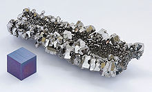

Niobium
|  | |||||||||||||||||||||||||||||||||||||||||||||||||||||||||||||||||||||||||||||||||||||||||||||||||||||||||||||||||||||||||||||||||||||||||||||||||||||||||||||||||||||||||||||||||||||||||||||||||||||||||||||||||||||||||||||||||||||
| General properties | |||||||||||||||||||||||||||||||||||||||||||||||||||||||||||||||||||||||||||||||||||||||||||||||||||||||||||||||||||||||||||||||||||||||||||||||||||||||||||||||||||||||||||||||||||||||||||||||||||||||||||||||||||||||||||||||||||||
|---|---|---|---|---|---|---|---|---|---|---|---|---|---|---|---|---|---|---|---|---|---|---|---|---|---|---|---|---|---|---|---|---|---|---|---|---|---|---|---|---|---|---|---|---|---|---|---|---|---|---|---|---|---|---|---|---|---|---|---|---|---|---|---|---|---|---|---|---|---|---|---|---|---|---|---|---|---|---|---|---|---|---|---|---|---|---|---|---|---|---|---|---|---|---|---|---|---|---|---|---|---|---|---|---|---|---|---|---|---|---|---|---|---|---|---|---|---|---|---|---|---|---|---|---|---|---|---|---|---|---|---|---|---|---|---|---|---|---|---|---|---|---|---|---|---|---|---|---|---|---|---|---|---|---|---|---|---|---|---|---|---|---|---|---|---|---|---|---|---|---|---|---|---|---|---|---|---|---|---|---|---|---|---|---|---|---|---|---|---|---|---|---|---|---|---|---|---|---|---|---|---|---|---|---|---|---|---|---|---|---|---|---|---|---|---|---|---|---|---|---|---|---|---|---|---|---|---|---|---|
| Name, symbol | niobium, Nb | ||||||||||||||||||||||||||||||||||||||||||||||||||||||||||||||||||||||||||||||||||||||||||||||||||||||||||||||||||||||||||||||||||||||||||||||||||||||||||||||||||||||||||||||||||||||||||||||||||||||||||||||||||||||||||||||||||||
| Pronunciation | /naɪˈoʊbiəm/ ny-OH-bee-əm |
||||||||||||||||||||||||||||||||||||||||||||||||||||||||||||||||||||||||||||||||||||||||||||||||||||||||||||||||||||||||||||||||||||||||||||||||||||||||||||||||||||||||||||||||||||||||||||||||||||||||||||||||||||||||||||||||||||
| Appearance | gray metallic, bluish when oxidized | ||||||||||||||||||||||||||||||||||||||||||||||||||||||||||||||||||||||||||||||||||||||||||||||||||||||||||||||||||||||||||||||||||||||||||||||||||||||||||||||||||||||||||||||||||||||||||||||||||||||||||||||||||||||||||||||||||||
| Niobium in the periodic table | |||||||||||||||||||||||||||||||||||||||||||||||||||||||||||||||||||||||||||||||||||||||||||||||||||||||||||||||||||||||||||||||||||||||||||||||||||||||||||||||||||||||||||||||||||||||||||||||||||||||||||||||||||||||||||||||||||||
|
|||||||||||||||||||||||||||||||||||||||||||||||||||||||||||||||||||||||||||||||||||||||||||||||||||||||||||||||||||||||||||||||||||||||||||||||||||||||||||||||||||||||||||||||||||||||||||||||||||||||||||||||||||||||||||||||||||||
| Atomic number | 41 | ||||||||||||||||||||||||||||||||||||||||||||||||||||||||||||||||||||||||||||||||||||||||||||||||||||||||||||||||||||||||||||||||||||||||||||||||||||||||||||||||||||||||||||||||||||||||||||||||||||||||||||||||||||||||||||||||||||
| Standard atomic weight (±) | 92.90637(2)[1] | ||||||||||||||||||||||||||||||||||||||||||||||||||||||||||||||||||||||||||||||||||||||||||||||||||||||||||||||||||||||||||||||||||||||||||||||||||||||||||||||||||||||||||||||||||||||||||||||||||||||||||||||||||||||||||||||||||||
| Element category | transition metal | ||||||||||||||||||||||||||||||||||||||||||||||||||||||||||||||||||||||||||||||||||||||||||||||||||||||||||||||||||||||||||||||||||||||||||||||||||||||||||||||||||||||||||||||||||||||||||||||||||||||||||||||||||||||||||||||||||||
| Group, block | group 5, d-block | ||||||||||||||||||||||||||||||||||||||||||||||||||||||||||||||||||||||||||||||||||||||||||||||||||||||||||||||||||||||||||||||||||||||||||||||||||||||||||||||||||||||||||||||||||||||||||||||||||||||||||||||||||||||||||||||||||||
| Period | period 5 | ||||||||||||||||||||||||||||||||||||||||||||||||||||||||||||||||||||||||||||||||||||||||||||||||||||||||||||||||||||||||||||||||||||||||||||||||||||||||||||||||||||||||||||||||||||||||||||||||||||||||||||||||||||||||||||||||||||
| Electron configuration | [Kr] 4d4 5s1 | ||||||||||||||||||||||||||||||||||||||||||||||||||||||||||||||||||||||||||||||||||||||||||||||||||||||||||||||||||||||||||||||||||||||||||||||||||||||||||||||||||||||||||||||||||||||||||||||||||||||||||||||||||||||||||||||||||||
| per shell | 2, 8, 18, 12, 1 | ||||||||||||||||||||||||||||||||||||||||||||||||||||||||||||||||||||||||||||||||||||||||||||||||||||||||||||||||||||||||||||||||||||||||||||||||||||||||||||||||||||||||||||||||||||||||||||||||||||||||||||||||||||||||||||||||||||
| Physical properties | |||||||||||||||||||||||||||||||||||||||||||||||||||||||||||||||||||||||||||||||||||||||||||||||||||||||||||||||||||||||||||||||||||||||||||||||||||||||||||||||||||||||||||||||||||||||||||||||||||||||||||||||||||||||||||||||||||||
| Phase | solid | ||||||||||||||||||||||||||||||||||||||||||||||||||||||||||||||||||||||||||||||||||||||||||||||||||||||||||||||||||||||||||||||||||||||||||||||||||||||||||||||||||||||||||||||||||||||||||||||||||||||||||||||||||||||||||||||||||||
| Melting point | 2750 K (2477 °C, 4491 °F) | ||||||||||||||||||||||||||||||||||||||||||||||||||||||||||||||||||||||||||||||||||||||||||||||||||||||||||||||||||||||||||||||||||||||||||||||||||||||||||||||||||||||||||||||||||||||||||||||||||||||||||||||||||||||||||||||||||||
| Boiling point | 5017 K (4744 °C, 8571 °F) | ||||||||||||||||||||||||||||||||||||||||||||||||||||||||||||||||||||||||||||||||||||||||||||||||||||||||||||||||||||||||||||||||||||||||||||||||||||||||||||||||||||||||||||||||||||||||||||||||||||||||||||||||||||||||||||||||||||
| Density near r.t. | 8.57 g·cm−3 | ||||||||||||||||||||||||||||||||||||||||||||||||||||||||||||||||||||||||||||||||||||||||||||||||||||||||||||||||||||||||||||||||||||||||||||||||||||||||||||||||||||||||||||||||||||||||||||||||||||||||||||||||||||||||||||||||||||
| Heat of fusion | 30 kJ·mol−1 | ||||||||||||||||||||||||||||||||||||||||||||||||||||||||||||||||||||||||||||||||||||||||||||||||||||||||||||||||||||||||||||||||||||||||||||||||||||||||||||||||||||||||||||||||||||||||||||||||||||||||||||||||||||||||||||||||||||
| Heat of vaporization | 689.9 kJ·mol−1 | ||||||||||||||||||||||||||||||||||||||||||||||||||||||||||||||||||||||||||||||||||||||||||||||||||||||||||||||||||||||||||||||||||||||||||||||||||||||||||||||||||||||||||||||||||||||||||||||||||||||||||||||||||||||||||||||||||||
| Molar heat capacity | 24.60 J·mol−1·K−1 | ||||||||||||||||||||||||||||||||||||||||||||||||||||||||||||||||||||||||||||||||||||||||||||||||||||||||||||||||||||||||||||||||||||||||||||||||||||||||||||||||||||||||||||||||||||||||||||||||||||||||||||||||||||||||||||||||||||
vapor pressure
|
|||||||||||||||||||||||||||||||||||||||||||||||||||||||||||||||||||||||||||||||||||||||||||||||||||||||||||||||||||||||||||||||||||||||||||||||||||||||||||||||||||||||||||||||||||||||||||||||||||||||||||||||||||||||||||||||||||||
| Atomic properties | |||||||||||||||||||||||||||||||||||||||||||||||||||||||||||||||||||||||||||||||||||||||||||||||||||||||||||||||||||||||||||||||||||||||||||||||||||||||||||||||||||||||||||||||||||||||||||||||||||||||||||||||||||||||||||||||||||||
| Oxidation states | 5, 4, 3, 2, −1 (a mildly acidic oxide) | ||||||||||||||||||||||||||||||||||||||||||||||||||||||||||||||||||||||||||||||||||||||||||||||||||||||||||||||||||||||||||||||||||||||||||||||||||||||||||||||||||||||||||||||||||||||||||||||||||||||||||||||||||||||||||||||||||||
| Electronegativity | Pauling scale: 1.6 | ||||||||||||||||||||||||||||||||||||||||||||||||||||||||||||||||||||||||||||||||||||||||||||||||||||||||||||||||||||||||||||||||||||||||||||||||||||||||||||||||||||||||||||||||||||||||||||||||||||||||||||||||||||||||||||||||||||
| Ionization energies | 1st: 652.1 kJ·mol−1 2nd: 1380 kJ·mol−1 3rd: 2416 kJ·mol−1 |
||||||||||||||||||||||||||||||||||||||||||||||||||||||||||||||||||||||||||||||||||||||||||||||||||||||||||||||||||||||||||||||||||||||||||||||||||||||||||||||||||||||||||||||||||||||||||||||||||||||||||||||||||||||||||||||||||||
| Atomic radius | empirical: 146 pm | ||||||||||||||||||||||||||||||||||||||||||||||||||||||||||||||||||||||||||||||||||||||||||||||||||||||||||||||||||||||||||||||||||||||||||||||||||||||||||||||||||||||||||||||||||||||||||||||||||||||||||||||||||||||||||||||||||||
| Covalent radius | 164±6 pm | ||||||||||||||||||||||||||||||||||||||||||||||||||||||||||||||||||||||||||||||||||||||||||||||||||||||||||||||||||||||||||||||||||||||||||||||||||||||||||||||||||||||||||||||||||||||||||||||||||||||||||||||||||||||||||||||||||||
| Miscellanea | |||||||||||||||||||||||||||||||||||||||||||||||||||||||||||||||||||||||||||||||||||||||||||||||||||||||||||||||||||||||||||||||||||||||||||||||||||||||||||||||||||||||||||||||||||||||||||||||||||||||||||||||||||||||||||||||||||||
| Crystal structure | body-centered cubic (bcc)
 |
||||||||||||||||||||||||||||||||||||||||||||||||||||||||||||||||||||||||||||||||||||||||||||||||||||||||||||||||||||||||||||||||||||||||||||||||||||||||||||||||||||||||||||||||||||||||||||||||||||||||||||||||||||||||||||||||||||
| Speed of sound thin rod | 3480 m·s−1 (at 20 °C) | ||||||||||||||||||||||||||||||||||||||||||||||||||||||||||||||||||||||||||||||||||||||||||||||||||||||||||||||||||||||||||||||||||||||||||||||||||||||||||||||||||||||||||||||||||||||||||||||||||||||||||||||||||||||||||||||||||||
| Thermal expansion | 7.3 µm·m−1·K−1 | ||||||||||||||||||||||||||||||||||||||||||||||||||||||||||||||||||||||||||||||||||||||||||||||||||||||||||||||||||||||||||||||||||||||||||||||||||||||||||||||||||||||||||||||||||||||||||||||||||||||||||||||||||||||||||||||||||||
| Thermal conductivity | 53.7 W·m−1·K−1 | ||||||||||||||||||||||||||||||||||||||||||||||||||||||||||||||||||||||||||||||||||||||||||||||||||||||||||||||||||||||||||||||||||||||||||||||||||||||||||||||||||||||||||||||||||||||||||||||||||||||||||||||||||||||||||||||||||||
| Electrical resistivity | 152 nΩ·m (at 0 °C) | ||||||||||||||||||||||||||||||||||||||||||||||||||||||||||||||||||||||||||||||||||||||||||||||||||||||||||||||||||||||||||||||||||||||||||||||||||||||||||||||||||||||||||||||||||||||||||||||||||||||||||||||||||||||||||||||||||||
| Magnetic ordering | paramagnetic | ||||||||||||||||||||||||||||||||||||||||||||||||||||||||||||||||||||||||||||||||||||||||||||||||||||||||||||||||||||||||||||||||||||||||||||||||||||||||||||||||||||||||||||||||||||||||||||||||||||||||||||||||||||||||||||||||||||
| Young's modulus | 105 GPa | ||||||||||||||||||||||||||||||||||||||||||||||||||||||||||||||||||||||||||||||||||||||||||||||||||||||||||||||||||||||||||||||||||||||||||||||||||||||||||||||||||||||||||||||||||||||||||||||||||||||||||||||||||||||||||||||||||||
| Shear modulus | 38 GPa | ||||||||||||||||||||||||||||||||||||||||||||||||||||||||||||||||||||||||||||||||||||||||||||||||||||||||||||||||||||||||||||||||||||||||||||||||||||||||||||||||||||||||||||||||||||||||||||||||||||||||||||||||||||||||||||||||||||
| Bulk modulus | 170 GPa | ||||||||||||||||||||||||||||||||||||||||||||||||||||||||||||||||||||||||||||||||||||||||||||||||||||||||||||||||||||||||||||||||||||||||||||||||||||||||||||||||||||||||||||||||||||||||||||||||||||||||||||||||||||||||||||||||||||
| Poisson ratio | 0.40 | ||||||||||||||||||||||||||||||||||||||||||||||||||||||||||||||||||||||||||||||||||||||||||||||||||||||||||||||||||||||||||||||||||||||||||||||||||||||||||||||||||||||||||||||||||||||||||||||||||||||||||||||||||||||||||||||||||||
| Mohs hardness | 6.0 | ||||||||||||||||||||||||||||||||||||||||||||||||||||||||||||||||||||||||||||||||||||||||||||||||||||||||||||||||||||||||||||||||||||||||||||||||||||||||||||||||||||||||||||||||||||||||||||||||||||||||||||||||||||||||||||||||||||
| Vickers hardness | 870–1320 MPa | ||||||||||||||||||||||||||||||||||||||||||||||||||||||||||||||||||||||||||||||||||||||||||||||||||||||||||||||||||||||||||||||||||||||||||||||||||||||||||||||||||||||||||||||||||||||||||||||||||||||||||||||||||||||||||||||||||||
| Brinell hardness | 735–2450 MPa | ||||||||||||||||||||||||||||||||||||||||||||||||||||||||||||||||||||||||||||||||||||||||||||||||||||||||||||||||||||||||||||||||||||||||||||||||||||||||||||||||||||||||||||||||||||||||||||||||||||||||||||||||||||||||||||||||||||
| CAS Registry Number | 7440-03-1 | ||||||||||||||||||||||||||||||||||||||||||||||||||||||||||||||||||||||||||||||||||||||||||||||||||||||||||||||||||||||||||||||||||||||||||||||||||||||||||||||||||||||||||||||||||||||||||||||||||||||||||||||||||||||||||||||||||||
| History | |||||||||||||||||||||||||||||||||||||||||||||||||||||||||||||||||||||||||||||||||||||||||||||||||||||||||||||||||||||||||||||||||||||||||||||||||||||||||||||||||||||||||||||||||||||||||||||||||||||||||||||||||||||||||||||||||||||
| Naming | after Niobe in Greek mythology, daughter of Tantalus (tantalum) | ||||||||||||||||||||||||||||||||||||||||||||||||||||||||||||||||||||||||||||||||||||||||||||||||||||||||||||||||||||||||||||||||||||||||||||||||||||||||||||||||||||||||||||||||||||||||||||||||||||||||||||||||||||||||||||||||||||
| Discovery | Charles Hatchett (1801) | ||||||||||||||||||||||||||||||||||||||||||||||||||||||||||||||||||||||||||||||||||||||||||||||||||||||||||||||||||||||||||||||||||||||||||||||||||||||||||||||||||||||||||||||||||||||||||||||||||||||||||||||||||||||||||||||||||||
| First isolation | Christian Wilhelm Blomstrand (1864) | ||||||||||||||||||||||||||||||||||||||||||||||||||||||||||||||||||||||||||||||||||||||||||||||||||||||||||||||||||||||||||||||||||||||||||||||||||||||||||||||||||||||||||||||||||||||||||||||||||||||||||||||||||||||||||||||||||||
| Recognized as a distinct element by | Heinrich Rose (1844) | ||||||||||||||||||||||||||||||||||||||||||||||||||||||||||||||||||||||||||||||||||||||||||||||||||||||||||||||||||||||||||||||||||||||||||||||||||||||||||||||||||||||||||||||||||||||||||||||||||||||||||||||||||||||||||||||||||||
| Most stable isotopes | |||||||||||||||||||||||||||||||||||||||||||||||||||||||||||||||||||||||||||||||||||||||||||||||||||||||||||||||||||||||||||||||||||||||||||||||||||||||||||||||||||||||||||||||||||||||||||||||||||||||||||||||||||||||||||||||||||||
|
|||||||||||||||||||||||||||||||||||||||||||||||||||||||||||||||||||||||||||||||||||||||||||||||||||||||||||||||||||||||||||||||||||||||||||||||||||||||||||||||||||||||||||||||||||||||||||||||||||||||||||||||||||||||||||||||||||||
| Decay modes in parentheses are predicted, but have not yet been observed | |||||||||||||||||||||||||||||||||||||||||||||||||||||||||||||||||||||||||||||||||||||||||||||||||||||||||||||||||||||||||||||||||||||||||||||||||||||||||||||||||||||||||||||||||||||||||||||||||||||||||||||||||||||||||||||||||||||
Niobium, formerly columbium, is a chemical element with symbol Nb (formerly Cb) and atomic number 41. It is a soft, grey, ductile transition metal, which is often found in the pyrochlore mineral, the main commercial source for niobium, and columbite. The name comes from Greek mythology: Niobe, daughter of Tantalus since it is so similar to tantalum.[2]
Niobium has physical and chemical properties similar to those of the element tantalum, and the two are therefore difficult to distinguish. The English chemist Charles Hatchett reported a new element similar to tantalum in 1801 and named it columbium. In 1809, the English chemist William Hyde Wollaston wrongly concluded that tantalum and columbium were identical. The German chemist Heinrich Rose determined in 1846 that tantalum ores contain a second element, which he named niobium. In 1864 and 1865, a series of scientific findings clarified that niobium and columbium were the same element (as distinguished from tantalum), and for a century both names were used interchangeably. Niobium was officially adopted as the name of the element in 1949, but the name columbium remains in current use in metallurgy in the United States.
It was not until the early 20th century that niobium was first used commercially. Brazil is the leading producer of niobium and ferroniobium, an alloy of niobium and iron. Niobium is used mostly in alloys, the largest part in special steel such as that used in gas pipelines. Although these alloys contain a maximum of 0.1%, the small percentage of niobium enhances the strength of the steel. The temperature stability of niobium-containing superalloys is important for its use in jet and rocket engines. Niobium is used in various superconducting materials. These superconducting alloys, also containing titanium and tin, are widely used in the superconducting magnets of MRI scanners. Other applications of niobium include its use in welding, nuclear industries, electronics, optics, numismatics, and jewelry. In the last two applications, niobium's low toxicity and ability to be colored by anodization are particular advantages.
Contents
[hide]History[edit]

{kind=link}
{kind=link}
Niobium was discovered by the English chemist Charles Hatchett in 1801.[3] He found a new element in a mineral sample that had been sent to England from Massachusetts, United States in 1734 by John Winthrop F.R.S. (grandson of John Winthrop the Younger) and named the mineral columbite and the new element columbium after Columbia, the poetical name for the United States.[4][5][6] The columbium discovered by Hatchett was probably a mixture of the new element with tantalum.[4]
Subsequently, there was considerable confusion[7] over the difference between columbium (niobium) and the closely related tantalum. In 1809, the English chemist William Hyde Wollaston compared the oxides derived from both columbium—columbite, with a density 5.918 g/cm3, and tantalum—tantalite, with a density over 8 g/cm3, and concluded that the two oxides, despite the significant difference in density, were identical; thus he kept the name tantalum.[7] This conclusion was disputed in 1846 by the German chemist Heinrich Rose, who argued that there were two different elements in the tantalite sample, and named them after children of Tantalus: niobium (from Niobe), and pelopium (from Pelops).[8][9] This confusion arose from the minimal observed differences between tantalum and niobium. The claimed new elements pelopium, ilmenium and dianium[10] were in fact identical to niobium or mixtures of niobium and tantalum.[11]
The differences between tantalum and niobium were unequivocally demonstrated in 1864 by Christian Wilhelm Blomstrand,[11] and Henri Etienne Sainte-Claire Deville, as well as Louis J. Troost, who determined the formulas of some of the compounds in 1865[11][12] and finally by the Swiss chemist Jean Charles Galissard de Marignac[13] in 1866, who all proved that there were only two elements. Articles on ilmenium continued to appear until 1871.[14]
De Marignac was the first to prepare the metal in 1864, when he reduced niobium chloride by heating it in an atmosphere of hydrogen.[15] Although de Marignac was able to produce tantalum-free niobium on a larger scale by 1866, it was not until the early 20th century that niobium was first used commercially, in incandescent lamp filaments.[12] This use quickly became obsolete through the replacement of niobium with tungsten, which has a higher melting point and thus is preferable for use in incandescent lamps. The discovery that niobium improves the strength of steel was made in the 1920s, and this application remains its predominant use.[12] In 1961 the American physicist Eugene Kunzler and coworkers at Bell Labs discovered that niobium-tin continues to exhibit superconductivity in the presence of strong electric currents and magnetic fields,[16] making it the first material to support the high currents and fields necessary for useful high-power magnets and electrically powered machinery. This discovery would allow — two decades later — the production of long multi-strand cables that could be wound into coils to create large, powerful electromagnets for rotating machinery, particle accelerators, or particle detectors.[17][18]
Naming of the element[edit]
Columbium (symbol Cb)[19] was the name originally given to this element by Hatchett, and this name remained in use in American journals—the last paper published by American Chemical Society with columbium in its title dates from 1953[20]—while niobium was used in Europe. To end this confusion, the name niobium was chosen for element 41 at the 15th Conference of the Union of Chemistry in Amsterdam in 1949.[21] A year later this name was officially adopted by the International Union of Pure and Applied Chemistry (IUPAC) after 100 years of controversy, despite the chronological precedence of the name Columbium.[21] The latter name is still sometimes used in US industry.[22] This was a compromise of sorts;[21] the IUPAC accepted tungsten instead of wolfram, in deference to North American usage; and niobium instead of columbium, in deference to European usage. Not everyone agreed, and while many leading chemical societies and government organizations refer to it by the official IUPAC name, many leading metallurgists, metal societies, and the United States Geological Survey still refer to the metal by the original "columbium".[23][24]
Characteristics[edit]
Physical[edit]
Niobium is a lustrous, grey, ductile, paramagnetic metal in group 5 of the periodic table (see table), although it has an atypical configuration in its outermost electron shells compared to the rest of the members. (This can be observed in the neighborhood of ruthenium (44), rhodium (45), and palladium (46).)
| Z | Element | No. of electrons/shell |
|---|---|---|
| 23 | vanadium | 2, 8, 11, 2 |
| 41 | niobium | 2, 8, 18, 12, 1 |
| 73 | tantalum | 2, 8, 18, 32, 11, 2 |
| 105 | dubnium | 2, 8, 18, 32, 32, 11, 2 (predicted) |
Niobium becomes a superconductor at cryogenic temperatures. At atmospheric pressure, it has the highest critical temperature of the elemental superconductors: 9.2 K.[25] Niobium has the largest magnetic penetration depth of any element.[25] In addition, it is one of the three elemental Type II superconductors, along with vanadium and technetium. The superconductive properties are strongly dependent on the purity of the niobium metal.[26] When very pure, it is comparatively soft and ductile, but impurities make it harder.[27]
The metal has a low capture cross-section for thermal neutrons;[28] thus it is used in the nuclear industries.[29]
Chemical[edit]
The metal takes on a bluish tinge when exposed to air at room temperature for extended periods.[30] Despite presenting a high melting point in elemental form (2,468 °C), it has a low density in comparison to other refractory metals. Furthermore, it is corrosion-resistant, exhibits superconductivity properties, and forms dielectric oxide layers.
Niobium is slightly less electropositive and more compact than its predecessor in the periodic table, zirconium, whereas it is virtually identical in size to the heavier tantalum atoms, owing to the lanthanide contraction.[27] As a result, niobium's chemical properties are very similar to those for tantalum, which appears directly below niobium in the periodic table.[12] Although its corrosion resistance is not as outstanding as that of tantalum, its lower price and greater availability make niobium attractive for less demanding uses such as linings in chemical plants.[27]
Isotopes[edit]
Naturally occurring niobium is composed of one stable isotope, 93Nb.[31] By 2003, at least 32 radioisotopes had been synthesized, ranging in atomic mass from 81 to 113. The most stable of these is 92Nb with a half-life of 34.7 million years. One of the least stable is 113Nb, with an estimated half-life of 30 milliseconds. Isotopes that are lighter than the stable 93Nb tend to decay by β+ decay, and those that are heavier tend to decay by β− decay, with some exceptions. 81Nb, 82Nb, and 84Nb have minor β+ delayed proton emission decay paths, 91Nb decays by electron capture and positron emission, and 92Nb decays by both β+ and β− decay.[31]
At least 25 nuclear isomers have been described, ranging in atomic mass from 84 to 104. Within this range, only 96Nb, 101Nb, and 103Nb do not have isomers. The most stable of niobium's isomers is 93mNb with a half-life of 16.13 years. The least stable isomer is 84mNb with a half-life of 103 ns. All of niobium's isomers decay by isomeric transition or beta decay except 92m1Nb, which has a minor electron capture decay chain.[31]
Occurrence[edit]
Niobium is estimated to be the 33rd most common element in the Earth’s crust, with 20 ppm.[32] Some think that the abundance on Earth is much greater, but that the "missing" niobium may be located in the Earth’s core due to the metal's high density.[23] The free element is not found in nature, but niobium occurs in combination with other elements in minerals.[27] Minerals that contain niobium often also contain tantalum. Examples include columbite ((Fe,Mn)(Nb,Ta)2O6) and columbite–tantalite (or coltan, (Fe,Mn)(Ta,Nb)2O6).[33] Columbite–tantalite minerals are most usually found as accessory minerals in pegmatite intrusions, and in alkaline intrusive rocks. Less common are the niobates of calcium, uranium, thorium and the rare earth elements. Examples of such niobates are pyrochlore ((Na,Ca)2Nb2O6(OH,F)) and euxenite ((Y,Ca,Ce,U,Th)(Nb,Ta,Ti)2O6). These large deposits of niobium have been found associated with carbonatites (carbonate-silicate igneous rocks) and as a constituent of pyrochlore.[34]
The two largest deposits of pyrochlore were found in the 1950s in Brazil and Canada, and both countries are still the major producers of niobium mineral concentrates.[12] The largest deposit is hosted within a carbonatite intrusion at Araxá, Minas Gerais Brazil, owned by CBMM (Companhia Brasileira de Metalurgia e Mineração); the other deposit is located in Goiás and owned by Anglo American plc (through its subsidiary Mineração Catalão), also hosted within a carbonatite intrusion.[35] Altogether these two Brazilian mines produce around 75% of world supply. The third largest producer of niobium is the carbonatite-hosted Niobec Mine, Saint-Honoré near Chicoutimi, Quebec owned by Iamgold Corporation Ltd, which produces around 7% of world supply.[35]
Production[edit]
{kind=link}
After the separation from the other minerals, the mixed oxides of tantalum Ta2O5 and niobium Nb2O5 are obtained. The first step in the processing is the reaction of the oxides with hydrofluoric acid:[33]
- Ta2O5 + 14 HF → 2 H2[TaF7] + 5 H2O
- Nb2O5 + 10 HF → 2 H2[NbOF5] + 3 H2O
The first industrial scale separation, developed by de Marignac, exploits the differing solubilities of the complex niobium and tantalum fluorides, dipotassium oxypentafluoroniobate monohydrate (K2[NbOF5]·H2O) and dipotassium heptafluorotantalate (K2[TaF7]) in water. Newer processes use the liquid extraction of the fluorides from aqueous solution by organic solvents like cyclohexanone.[33] The complex niobium and tantalum fluorides are extracted separately from the organic solvent with water and either precipitated by the addition of potassium fluoride to produce a potassium fluoride complex, or precipitated with ammonia as the pentoxide:[36]
- H2[NbOF5] + 2 KF → K2[NbOF5]↓ + 2 HF
Followed by:
- 2 H2[NbOF5] + 10 NH4OH → Nb2O5↓ + 10 NH4F + 7 H2O
Several methods are used for the reduction to metallic niobium. The electrolysis of a molten mixture of K2[NbOF5] and sodium chloride is one; the other is the reduction of the fluoride with sodium. With this method niobium with a relatively high purity can be obtained. In large scale production the reduction of Nb2O5 with hydrogen or carbon[36] is used. In the process involving the aluminothermic reaction a mixture of iron oxide and niobium oxide is reacted with aluminium:
- 3 Nb2O5 + Fe2O3 + 12 Al → 6 Nb + 2 Fe + 6 Al2O3
To enhance the reaction, small amounts of oxidizers like sodium nitrate are added. The result is aluminium oxide and ferroniobium, an alloy of iron and niobium used in the steel production.[37][38] The ferroniobium contains between 60 and 70% of niobium.[35] Without addition of iron oxide, aluminothermic process is used for the production of niobium. Further purification is necessary to reach the grade for superconductive alloys. Electron beam melting under vacuum is the method used by the two major distributors of niobium.[39][40]
As of 2013[update], the Brazilian company Cia. Brasileira de Metalurgia & Mineracao "controls 85 percent of the world's niobium production".[41] The United States Geological Survey estimates that the production increased from 38,700 tonnes in 2005 to 44,500 tonnes in 2006.[42][43] The worldwide resources are estimated to be 4,400,000 tonnes.[43] During the ten-year period between 1995 and 2005, the production more than doubled, starting from 17,800 tonnes in 1995.[44] Since 2009 production is stable at around 63,000 tonnes per year.[45]
| Country | 2000 | 2001 | 2002 | 2003 | 2004 | 2005 | 2006 | 2007 | 2008 | 2009 | 2010 | 2011 |
|---|---|---|---|---|---|---|---|---|---|---|---|---|
| 160 | 230 | 290 | 230 | 200 | 200 | 200 | ? | ? | ? | ? | ? | |
| 30,000 | 22,000 | 26,000 | 29,000 | 29,900 | 35,000 | 40,000 | 57,300 | 58,000 | 58,000 | 58,000 | 58,000 | |
| 2,290 | 3,200 | 3,410 | 3,280 | 3,400 | 3,310 | 4,167 | 3,020 | 4,380 | 4,330 | 4,420 | 4,400 | |
| Congo D.R. | ? | 50 | 50 | 13 | 52 | 25 | ? | ? | ? | ? | ? | ? |
| ? | ? | 5 | 34 | 130 | 34 | 29 | ? | ? | ? | ? | ? | |
| Nigeria | 35 | 30 | 30 | 190 | 170 | 40 | 35 | ? | ? | ? | ? | ? |
| Rwanda | 28 | 120 | 76 | 22 | 63 | 63 | 80 | ? | ? | ? | ? | ? |
| World | 32,600 | 25,600 | 29,900 | 32,800 | 34,000 | 38,700 | 44,500 | 60,400 | 62,900 | 62,900 | 62,900 | 63,000 |
Lesser amounts are found in Malawi's Kanyika Deposit (Kanyika mine).
Compounds[edit]
Niobium is in many ways similar to tantalum and zirconium. It reacts with most nonmetals at high temperatures: niobium reacts with fluorine at room temperature, with chlorine and hydrogen at 200 °C, and with nitrogen at 400 °C, giving products that are frequently interstitial and nonstoichiometric.[27] The metal begins to oxidize in air at 200 °C,[36] and is resistant to corrosion by fused alkalis and by acids, including aqua regia, hydrochloric, sulfuric, nitric and phosphoric acids.[27] Niobium is attacked by hydrofluoric acid and hydrofluoric/nitric acid mixtures.
Although niobium exhibits all of the formal oxidation states from +5 to −1, in most commonly encountered compounds, it is found in the +5 state.[27] Characteristically, compounds in oxidation states less than 5+ display Nb–Nb bonding.
Oxides and sulfides[edit]
Niobium forms oxides with the oxidation states +5 (Nb2O5), +4 (NbO2), and +3 (Nb2O3),[36] as well as with the rarer oxidation state +2 (NbO).[47] Most commonly encountered is the pentoxide, precursor to almost all niobium compounds and alloys.[36][48] Niobates are generated by dissolving the pentoxide in basic hydroxide solutions or by melting it in alkali metal oxides. Examples are lithium niobate (LiNbO3) and lanthanum niobate (LaNbO4). In the lithium niobate is a trigonally distorted perovskite-like structure, whereas the lanthanum niobate contains lone NbO3−
4 ions.[36] The layered niobium sulfide (NbS2) is also known.[27]
Materials with a thin film coating of niobium(V) oxide can be produced by chemical vapor deposition or atomic layer deposition processes, in each case by the thermal decomposition of niobium(V) ethoxide above 350 °C.[49][50]
Halides[edit]
{kind=link}
{kind=link}
Niobium forms halides in the oxidation states of +5 and +4 as well as diverse substoichiometric compounds.[36][39] The pentahalides (NbX
5) feature octahedral Nb centres. Niobium pentafluoride (NbF5) is a white solid with a melting point of 79.0 °C and niobium pentachloride (NbCl5) is yellow (see image at left) with a melting point of 203.4 °C. Both are hydrolyzed to give oxides and oxyhalides, such as NbOCl3. The pentachloride is a versatile reagent being used to generate the organometallic compounds, such as niobocene dichloride ((C
5H
5)
2NbCl
2).[51] The tetrahalides (NbX
4) are dark-coloured polymers with Nb-Nb bonds, for example the black hygroscopic niobium tetrafluoride (NbF4) and brown niobium tetrachloride (NbCl4).
Anionic halide compounds of niobium are well known, owing in part to the Lewis acidity of the pentahalides. The most important is [NbF7]2−, which is an intermediate in the separation of Nb and Ta from the ores.[33] This heptafluoride tends to form the oxopentafluoride more readily than does the tantalum compound.Other halide complexes include octahedral [NbCl6]−:
- Nb2Cl10 + 2 Cl− → 2 [NbCl6]−
As for other early metals, a variety of reduced halide clusters are known, the premier example being [Nb6Cl18]4−.[52]
Nitrides and carbides[edit]
Other binary compounds of niobium include the niobium nitride (NbN), which becomes a superconductor at low temperatures and is used in detectors for infrared light.[53] The main niobium carbide is NbC, an extremely hard, refractory, ceramic material, commercially used in tool bits for cutting tools.
Applications[edit]
{kind=link}
It is estimated that out of 44,500 metric tons of niobium mined in 2006, 90% was used in the production of high-grade structural steel, followed by its use in superalloys.[54] The use of niobium alloys for superconductors and in electronic components account only for a small share of the production.[54]
Steel production[edit]
Niobium is an effective microalloying element for steel. Adding niobium to the steel causes the formation of niobium carbide and niobium nitride within the structure of the steel.[23] These compounds improve the grain refining, retardation of recrystallization, and precipitation hardening of the steel. These effects in turn increase the toughness, strength, formability, and weldability of the microalloyed steel.[23] Microalloyed stainless steels have a niobium content of less than 0.1%.[55] It is an important alloy addition to high strength low alloy steels which are widely used as structural components in modern automobiles.[23] These niobium-containing alloys are strong and are often used in pipeline construction.[56][57]
Superalloys[edit]
{kind=link}
Appreciable amounts of the element, either in its pure form or in the form of high-purity ferroniobium and nickel niobium, are used in nickel-, cobalt-, and iron-based superalloys for such applications as jet engine components, gas turbines, rocket subassemblies, turbo charger systems, and heat resisting and combustion equipment. Niobium precipitates a hardening γ''-phase within the grain structure of the superalloy.[58] The alloys contain up to 6.5% niobium.[55] One example of a nickel-based niobium-containing superalloy is Inconel 718, which consists of roughly 50% nickel, 18.6% chromium, 18.5% iron, 5% niobium, 3.1% molybdenum, 0.9% titanium, and 0.4% aluminium.[59][60] These superalloys are used, for example, in advanced air frame systems such as those used in the Gemini program.
An alloy used for liquid rocket thruster nozzles, such as in the main engine of the Apollo Lunar Modules, is the niobium alloy C-103, which consists of 89% niobium, 10% hafnium and 1% titanium.[61] Another niobium alloy was used for the nozzle of the Apollo Service Module. As niobium is oxidized at temperatures above 400 °C, a protective coating is necessary for these applications to prevent the alloy from becoming brittle.[61]
Niobium-base alloys[edit]
C-103 alloy was developed in the early 1960s jointly by the Wah Chang Corporation and Boeing Co. DuPont, Union Carbide Corp., General Electric Co. and several other companies were developing Nb-base alloys simultaneously, largely driven by the Cold War and Space Race. The sensitivity of Nb to oxygen requires processing in vacuum or inert atmosphere, which significantly increases the cost and difficulty of production. Vacuum arc remelting (VAR) and electron beam melting (EBM), novel processes at the time, enabled the development of reactive metals such as Nb. The project that yielded C-103 began in 1959 with as many as 256 experimental Nb alloys in the "C-series" (possibly from columbium) that could be melted as buttons and rolled into sheet. Wah Chang had an inventory of Hf, refined from nuclear-grade Zr, that it wanted to put to commercial use. The 103rd experimental composition of the C-series alloys, Nb-10Hf-1Ti, had the best combination of formability and high-temperature properties. Wah Chang fabricated the first 500-lb heat of C-103 in 1961, ingot to sheet, using EBM and VAR. The intended applications included turbine engine components and liquid metal heat exchangers. Competing Nb alloys from that era included FS85 (Nb-10W-28Ta-1Zr) from Fansteel Metallurgical Corp., Cb129Y (Nb-10W-10Hf-0.2Y) from Wah Chang and Boeing, Cb752 (Nb-10W-2.5Zr) from Union Carbide, and Nb1Zr from Superior Tube Co.[61]
Superconducting magnets[edit]
{kind=link}
Niobium-germanium (Nb
3Ge), niobium-tin (Nb
3Sn), as well as the niobium-titanium alloys are used as a type II superconductor wire for superconducting magnets.[62][63] These superconducting magnets are used in magnetic resonance imaging and nuclear magnetic resonance instruments as well as in particle accelerators.[64] For example, the Large Hadron Collider uses 600 tons of superconducting strands, while the International Thermonuclear Experimental Reactor is estimated to use 600 tonnes of Nb3Sn strands and 250 tonnes of NbTi strands.[65] In 1992 alone, niobium-titanium wires were used to construct more than US$1 billion worth of clinical magnetic resonance imaging systems.[17]
Other superconductors[edit]
The Superconducting Radio Frequency (RF) cavities used in the free electron lasers FLASH (result of the cancelled TESLA linear accelerator project) and XFEL are made from pure niobium.[66]
The high sensitivity of superconducting niobium nitride bolometers make them an ideal detector for electromagnetic radiation in the THz frequency band. These detectors were tested at the Heinrich Hertz Submillimeter Telescope, the South Pole Telescope, the Receiver Lab Telescope, and at APEX and are now used in the HIFI instrument on board the Herschel Space Observatory.[67]
Other uses[edit]
Electroceramics[edit]
Lithium niobate, which is a ferroelectric, is used extensively in mobile telephones and optical modulators, and for the manufacture of surface acoustic wave devices. It belongs to the ABO3 structure ferroelectrics like lithium tantalate and barium titanate.[68] Niobium capacitors are available as alternative to tantalum capacitors,[69] but tantalum capacitors are still predominant. Niobium is added to glass in order to attain a higher refractive index, a property of use to the optical industry in making thinner corrective glasses.
Hypoallergenic applications: medicine and jewelry[edit]
Niobium and some niobium alloys are physiologically inert and thus hypoallergenic. For this reason, niobium is found in many medical devices such as pacemakers.[70] Niobium treated with sodium hydroxide forms a porous layer that aids osseointegration.[71]
Along with titanium, tantalum, and aluminium, niobium can also be electrically heated and anodized, resulting in a wide array of colours using a process known as reactive metal anodizing which is useful in making jewelry.[72][73] The fact that niobium is hypoallergenic also benefits its use in jewelry.[74]
Numismatics[edit]
{kind=link}
Niobium is used as a precious metal in commemorative coins, often with silver or gold. For example, Austria produced a series of silver niobium euro coins starting in 2003; the colour in these coins is created by the diffraction of light by a thin oxide layer produced by anodising.[75] In 2012, ten coins are available showing a broad variety of colours in the centre of the coin: blue, green, brown, purple, violet, or yellow. Two more examples are the 2004 Austrian €25 150 Years Semmering Alpine Railway commemorative coin,[76] and the 2006 Austrian €25 European Satellite Navigation commemorative coin.[77] The Austrian mint produced for Latvia a similar series of coins starting in 2004,[78] with one following in 2007.[79] In 2011, the Royal Canadian Mint started production of a $5 sterling silver and niobium coin named Hunter's Moon[80] in which the niobium was selectively oxidized, thus creating unique finishes where no two coins are exactly alike.
Other[edit]
The arc-tube seals of high pressure sodium vapor lamps are made from niobium, or niobium with 1% of zirconium, because niobium has a very similar coefficient of thermal expansion to the sintered alumina arc tube ceramic, a translucent material which resists chemical attack or reduction by the hot liquid sodium and sodium vapour contained inside the operating lamp.[81][82][83] The metal is also used in arc welding rods for some stabilized grades of stainless steel.[84] It is also used as a material in anodes for cathodic protection systems on some water tanks, which are then usually plated by platinum.[85][86]
Precautions[edit]
Niobium has no known biological role. While niobium dust is an eye and skin irritant and a potential fire hazard, elemental niobium on a larger scale is physiologically inert (and thus hypoallergenic) and harmless. It is frequently used in jewelry and has been tested for use in some medical implants.[87][88]
Niobium-containing compounds are rarely encountered by most people, but some are toxic and should be treated with care. The short and long term exposure to niobates and niobium chloride, two chemicals that are water soluble, have been tested in rats. Rats treated with a single injection of niobium pentachloride or niobates show a median lethal dose (LD50) between 10 and 100 mg/kg.[89][90][91] For oral administration the toxicity is lower; a study with rats yielded a LD50 after seven days of 940 mg/kg.[89]
References[edit]
- Jump up ^ Standard Atomic Weights 2013. Commission on Isotopic Abundances and Atomic Weights
- Jump up ^ Knapp, Brian. Francium to Polonium. Atlantic Europe Publishing Company, 2002, p. 40.
- Jump up ^ See:
- Charles Hatchett (1802) "An analysis of a mineral substance from North America, containing a metal hitherto unknown", Philosophical Transactions of the Royal Society of London, 92 : 49–66.
- Hatchett, Charles (1802). "Eigenschaften und chemisches Verhalten des von Charles Hatchett entdeckten neuen Metalls, Columbium" [Properties and chemical behavior of the new metal, columbium, (that was) discovered by Charles Hatchett]. Annalen der Physik (in German) 11 (5): 120–122. Bibcode:1802AnP....11..120H. doi:10.1002/andp.18020110507.
- ^ Jump up to: a b Noyes, William Albert (1918). A Textbook of Chemistry. H. Holt & Co. p. 523.
- Jump up ^ Percival, James (January 1853). "Middletown Silver and Lead Mines". Journal of Silver and Lead Mining Operations 1: 186. Retrieved 2013-04-24.
- Jump up ^ Griffith, William P.; Morris, Peter J. T. (2003). "Charles Hatchett FRS (1765–1847), Chemist and Discoverer of Niobium". Notes and Records of the Royal Society of London 57 (3): 299. doi:10.1098/rsnr.2003.0216. JSTOR 3557720.
- ^ Jump up to: a b Wollaston, William Hyde (1809). "On the Identity of Columbium and Tantalum". Philosophical Transactions of the Royal Society 99: 246–252. doi:10.1098/rstl.1809.0017. JSTOR 107264.
- Jump up ^ Rose, Heinrich (1844). "Ueber die Zusammensetzung der Tantalite und ein im Tantalite von Baiern enthaltenes neues Metall". Annalen der Physik (in German) 139 (10): 317–341. Bibcode:1844AnP...139..317R. doi:10.1002/andp.18441391006.
- Jump up ^ Rose, Heinrich (1847). "Ueber die Säure im Columbit von Nordamérika". Annalen der Physik (in German) 146 (4): 572–577. Bibcode:1847AnP...146..572R. doi:10.1002/andp.18471460410.
- Jump up ^ Kobell, V. (1860). "Ueber eine eigenthümliche Säure, Diansäure, in der Gruppe der Tantal- und Niob- verbindungen". Journal für Praktische Chemie 79 (1): 291–303. doi:10.1002/prac.18600790145.
- ^ Jump up to: a b c Marignac, Blomstrand; H. Deville; L. Troost & R. Hermann (1866). "Tantalsäure, Niobsäure, (Ilmensäure) und Titansäure". Fresenius' Journal of Analytical Chemistry 5 (1): 384–389. doi:10.1007/BF01302537.
- ^ Jump up to: a b c d e Gupta, C. K.; Suri, A. K. (1994). Extractive Metallurgy of Niobium. CRC Press. pp. 1–16. ISBN 0-8493-6071-4.
- Jump up ^ Marignac, M. C. (1866). "Recherches sur les combinaisons du niobium". Annales de chimie et de physique (in French) 4 (8): 7–75.
- Jump up ^ Hermann, R. (1871). "Fortgesetzte Untersuchungen über die Verbindungen von Ilmenium und Niobium, sowie über die Zusammensetzung der Niobmineralien (Further research about the compounds of ilmenium and niobium, as well as the composition of niobium minerals)". Journal für Praktische Chemie (in German) 3 (1): 373–427. doi:10.1002/prac.18710030137.
- Jump up ^ "Niobium". Universidade de Coimbra. Retrieved 2008-09-05.
- Jump up ^ Geballe et al. (1993) gives a critical point at currents of 150 kiloamperes and magnetic fields of 8.8 tesla.
- ^ Jump up to: a b Geballe, Theodore H. (October 1993). "Superconductivity: From Physics to Technology". Physics Today 46 (10): 52–56. Bibcode:1993PhT....46j..52G. doi:10.1063/1.881384.
- Jump up ^ Matthias, B. T.; Geballe, T. H.; Geller, S.; Corenzwit, E. (1954). "Superconductivity of Nb3Sn". Physical Review 95 (6): 1435–1435. Bibcode:1954PhRv...95.1435M. doi:10.1103/PhysRev.95.1435.
- Jump up ^ Kòrösy, F. (1939). "Reaction of Tantalum, Columbium and Vanadium with Iodine". Journal of the American Chemical Society 61 (4): 838–843. doi:10.1021/ja01873a018.
- Jump up ^ Ikenberry, L.; Martin, J. L.; Boyer, W. J. (1953). "Photometric Determination of Columbium, Tungsten, and Tantalum in Stainless Steels". Analytical Chemistry 25 (9): 1340–1344. doi:10.1021/ac60081a011.
- ^ Jump up to: a b c Rayner-Canham, Geoff; Zheng, Zheng (2008). "Naming elements after scientists: an account of a controversy". Foundations of Chemistry 10 (1): 13–18. doi:10.1007/s10698-007-9042-1.
- Jump up ^ Clarke, F. W. (1914). "Columbium Versus Niobium". Science 39 (995): 139–140. Bibcode:1914Sci....39..139C. doi:10.1126/science.39.995.139. JSTOR 1640945. PMID 17780662.
- ^ Jump up to: a b c d e Patel, Zh.; Khul'ka K. (2001). "Niobium for Steelmaking". Metallurgist 45 (11–12): 477–480. doi:10.1023/A:1014897029026.
- Jump up ^ Norman N., Greenwood (2003). "Vanadium to dubnium: from confusion through clarity to complexity". Catalysis Today 78 (1–4): 5–11. doi:10.1016/S0920-5861(02)00318-8.
- ^ Jump up to: a b Peiniger, M.; Piel, H. (1985). "A Superconducting Nb3Sn Coated Multicell Accelerating Cavity". Nuclear Science 32 (5): 3610. Bibcode:1985ITNS...32.3610P. doi:10.1109/TNS.1985.4334443.
- Jump up ^ Salles Moura, Hernane R.; Louremjo de Moura, Louremjo (2007). "Melting And Purification Of Niobium". AIP Conference Proceedings (American Institute of Physics) (927(Single Crystal – Large Grain Niobium Technology)): 165–178. ISSN 0094-243X.
- ^ Jump up to: a b c d e f g h Nowak, Izabela; Ziolek, Maria (1999). "Niobium Compounds: Preparation, Characterization, and Application in Heterogeneous Catalysis". Chemical Reviews 99 (12): 3603–3624. doi:10.1021/cr9800208. PMID 11849031.
- Jump up ^ Jahnke, L. P.; Frank, R. G.; Redden, T. K. (1960). "Columbium Alloys Today". Metal Progr. 77 (6): 69–74. OSTI 4183692.
- Jump up ^ Nikulina, A. V. (2003). "Zirconium-Niobium Alloys for Core Elements of Pressurized Water Reactors". Metal Science and Heat Treatment 45 (7–8): 287–292. doi:10.1023/A:1027388503837.
- Jump up ^ Lide, David R. (2004). "The Elements". CRC Handbook of Chemistry and Physics (85th ed.). CRC Press. pp. 4–21. ISBN 978-0-8493-0485-9.
- ^ Jump up to: a b c Georges, Audi; Bersillon, O.; Blachot, J.; Wapstra, A.H. (2003). "The NUBASE Evaluation of Nuclear and Decay Properties". Nuclear Physics A (Atomic Mass Data Center) 729: 3–128. Bibcode:2003NuPhA.729....3A. doi:10.1016/j.nuclphysa.2003.11.001.
- Jump up ^ Emsley, John (2001). "Niobium". Nature's Building Blocks: An A-Z Guide to the Elements. Oxford, England, UK: Oxford University Press. pp. 283–286. ISBN 0-19-850340-7.
- ^ Jump up to: a b c d Soisson, Donald J.; McLafferty, J. J.; Pierret, James A. (1961). "Staff-Industry Collaborative Report: Tantalum and Niobium". Industrial and Engineering Chemistry 53 (11): 861–868. doi:10.1021/ie50623a016.
- Jump up ^ Lumpkin, Gregory R.; Ewing, Rodney C. (1995). "Geochemical alteration of pyrochlore group minerals: Pyrochlore subgroup" (PDF). American Mineralogist 80: 732–743.
- ^ Jump up to: a b c Kouptsidis, J; Peters, F.; Proch, D.; Singer, W. "Niob für TESLA" (PDF) (in German). Deutsches Elektronen-Synchrotron DESY. Retrieved 2008-09-02.
- ^ Jump up to: a b c d e f g Holleman, Arnold F.; Wiberg, Egon; Wiberg, Nils (1985). "Niob". Lehrbuch der Anorganischen Chemie (in German) (91–100 ed.). Walter de Gruyter. pp. 1075–1079. ISBN 3-11-007511-3.
- Jump up ^ Tither, Geoffrey (2001). Minerals, Metals and Materials Society, Metals and Materials Society Minerals, ed. "Progress in Niobium Markets and Technology 1981–2001" (PDF). Niobium Science & Technology: Proceedings of the International Symposium Niobium 2001 (Orlando, Florida, USA) (Niobium 2001 Ltd, 2002). ISBN 978-0-9712068-0-9.
- Jump up ^ Dufresne, Claude; Goyette, Ghislain (2001). Minerals, Metals and Materials Society, Metals and Materials Society Minerals, ed. "The Production of Ferroniobium at the Niobec mine 1981–2001" (PDF). Niobium Science & Technology: Proceedings of the International Symposium Niobium 2001 (Orlando, Florida, USA) (Niobium 2001 Ltd, 2002). ISBN 978-0-9712068-0-9.
- ^ Jump up to: a b Agulyansky, Anatoly (2004). The Chemistry of Tantalum and Niobium Fluoride Compounds. Elsevier. pp. 1–11. ISBN 978-0-444-51604-6.
- Jump up ^ Choudhury, Alok; Hengsberger, Eckart (1992). "Electron Beam Melting and Refining of Metals and Alloys". The Iron and Steel Institute of Japan International 32 (5): 673–681. doi:10.2355/isijinternational.32.673.
- Jump up ^ Lucchesi, Cristane; Cuadros, Alex (April 2013), "Mineral Wealth", Bloomberg Markets (paper): 14
- Jump up ^ Papp, John F. "Niobium (Columbium)" (PDF). USGS 2006 Commodity Summary. Retrieved 2008-11-20.
- ^ Jump up to: a b Papp, John F. "Niobium (Columbium)" (PDF). USGS 2007 Commodity Summary. Retrieved 2008-11-20.
- Jump up ^ Papp, John F. "Niobium (Columbium)" (PDF). USGS 1997 Commodity Summary. Retrieved 2008-11-20.
- Jump up ^ Niobium (Colombium) U.S. Geological Survey, Mineral Commodity Summaries, January 2011
- Jump up ^ Larry D. Cunningham (2012-04-05). "USGS Minerals Information: Niobium (Columbium) and Tantalum". Minerals.usgs.gov. Retrieved 2012-08-17.
- Jump up ^ Greenwood, Norman N.; Earnshaw, Alan (1997). Chemistry of the Elements (2nd ed.). Butterworth-Heinemann. ISBN 0080379419.
- Jump up ^ Cardarelli, Francois (2008). Materials Handbook. Springer London. ISBN 978-1-84628-668-1.
- Jump up ^ Rahtu, Antti (2002). Atomic Layer Deposition of High Permittivity Oxides: Film Growth and In Situ Studies (Thesis). University of Helsinki. ISBN 952-10-0646-3.
- Jump up ^ Maruyama, Toshiro (1994). "Electrochromic Properties of Niobium Oxide Thin Films Prepared by Chemical Vapor Deposition". Journal of the Electrochemical Society 141 (10): 2868. doi:10.1149/1.2059247.
- Jump up ^ C. R. Lucas; J. A. Labinger; J. Schwartz (1990). Robert J. Angelici, ed. "Dichlorobis(η5-Cyclopentadienyl)Niobium(IV)". Inorganic Syntheses. Inorganic Syntheses (New York: J. Wiley & Sons) 28: 267–270. doi:10.1002/9780470132593.ch68. ISBN 0-471-52619-3.
- Jump up ^ Greenwood, Norman N.; Earnshaw, Alan (1997). Chemistry of the Elements (2nd ed.). Butterworth-Heinemann. ISBN 0080379419.
- Jump up ^ Verevkin, A.; Pearlman, A.; Slstrokysz, W.; Zhang, J. et al. (2004). "Ultrafast superconducting single-photon detectors for near-infrared-wavelength quantum communications". Journal of Modern Optics 51 (12): 1447–1458. doi:10.1080/09500340410001670866.
- ^ Jump up to: a b Papp, John F. "Niobium (Columbium ) and Tantalum" (PDF). USGS 2006 Minerals Yearbook. Retrieved 2008-09-03.
- ^ Jump up to: a b Heisterkamp, Friedrich; Tadeu Carneiro (2001). Minerals, Metals and Materials Society, Metals and Materials Society Minerals, ed. "Niobium: Future Possibilities – Technology and the Market Place" (PDF). Niobium Science & Technology: Proceedings of the International Symposium Niobium 2001 (Orlando, Florida, USA) (Niobium 2001 Ltd, 2002). ISBN 978-0-9712068-0-9.
- Jump up ^ Eggert, Peter; Priem, Joachim; Wettig, Eberhard (1982). "Niobium: a steel additive with a future". Economic Bulletin 19 (9): 8–11. doi:10.1007/BF02227064.
- Jump up ^ Hillenbrand, Hans-Georg; Gräf, Michael; Kalwa, Christoph (2001-05-02). "Development and Production of High Strength Pipeline Steels" (PDF). Niobium Science & Technology: Proceedings of the International Symposium Niobium 2001 (Orlando, Florida, USA) (Europipe).
- Jump up ^ Donachie, Matthew J. (2002). Superalloys: A Technical Guide. ASM International. pp. 29–30. ISBN 978-0-87170-749-9.
- Jump up ^ Bhadeshia, H. k. d. h. "Nickel Based Superalloys". University of Cambridge. Retrieved 2008-09-04.
- Jump up ^ Pottlacher, G.; Hosaeus, H.; Wilthan, B.; Kaschnitz, E. et al. (2002). "Thermophysikalische Eigenschaften von festem und flüssigem Inconel 718". Thermochimica Acta (in German) 382 (1––2): 55–267. doi:10.1016/S0040-6031(01)00751-1.
- ^ Jump up to: a b c Hebda, John (2001-05-02). "Niobium alloys and high Temperature Applications" (PDF). Niobium Science & Technology: Proceedings of the International Symposium Niobium 2001 (Orlando, Florida, USA) (Companhia Brasileira de Metalurgia e Mineração).
- Jump up ^ Lindenhovius, J.L.H.; Hornsveld, E.M.; Den Ouden, A.; Wessel, W.A.J. et al. (2000). "Powder-in-tube (PIT) Nb/sub 3/Sn conductors for high-field magnets". IEEE Transactions on Applied Superconductivity 10: 975–978. doi:10.1109/77.828394.
- Jump up ^ Nave, Carl R. "Superconducting Magnets". Georgia State University, Department of Physics and Astronomy. Retrieved 2008-11-25.
- Jump up ^ Glowacki, B. A.; Yan, X. -Y.; Fray, D.; Chen, G. et al. (2002). "Niobium based intermetallics as a source of high-current/high magnetic field superconductors". Physica C: Superconductivity. 372–376 (3): 1315–1320. arXiv:cond-mat/0109088. Bibcode:2002PhyC..372.1315G. doi:10.1016/S0921-4534(02)01018-3.
- Jump up ^ Grunblatt, G.; Mocaer, P.; Verwaerde Ch.; Kohler, C. (2005). "A success story: LHC cable production at ALSTOM-MSA". Fusion Engineering and Design (Proceedings of the 23rd Symposium of Fusion Technology). 75–79: 1–5. doi:10.1016/j.fusengdes.2005.06.216.
- Jump up ^ Lilje, L.; Kako, E.; Kostin, D.; Matheisen, A. et al. (2004). "Achievement of 35 MV/m in the superconducting nine-cell cavities for TESLA". Nuclear Instruments and Methods in Physics Research Section A: Accelerators, Spectrometers, Detectors and Associated Equipment 524 (1–3): 1–12. arXiv:physics/0401141. Bibcode:2004NIMPA.524....1L. doi:10.1016/j.nima.2004.01.045.
- Jump up ^ Cherednichenko, Sergey; Drakinskiy, Vladimir; Berg, Therese; Khosropanah, Pourya et al. (2008). "A Hot-electron bolometer terahertz mixers for the Herschel Space Observatory". Review of Scientific Instruments 79 (3): 0345011–03451010. Bibcode:2008RScI...79c4501C. doi:10.1063/1.2890099. PMID 18377032.
- Jump up ^ Volk, Tatyana; Wohlecke, Manfred (2008). Lithium Niobate: Defects, Photorefraction and Ferroelectric Switching. Springer. pp. 1–9. ISBN 978-3-540-70765-3.
- Jump up ^ Pozdeev, Y. (1991). "Reliability comparison of tantalum and niobium solid electrolytic capacitors". Quality and Reliability Engineering International 14 (2): 79–82. doi:10.1002/(SICI)1099-1638(199803/04)14:2<79::AID-QRE163>3.0.CO;2-Y.
- Jump up ^ Mallela, Venkateswara Sarma; Ilankumaran, V.; Srinivasa Rao, N. (1 January 2004). "Trends in Cardiac Pacemaker Batteries". Indian Pacing Electrophysiol J. 4 (4): 201–212. PMC 1502062. PMID 16943934.
- Jump up ^ Godley, Reut; Starosvetsky, David; Gotman, Irena (2004). "Bonelike apatite formation on niobium metal treated in aqueous NaOH" (PDF). Journal of Materials Science: Materials in Medicine 15 (10): 1073–1077. doi:10.1023/B:JMSM.0000046388.07961.81. PMID 15516867.
- Jump up ^ Biason Gomes, M. A.; Onofre, S.; Juanto, S.; Bulhões, L. O. de S. (1991). "Anodization of niobium in sulphuric acid media". Journal of Applied Electrochemistry 21 (11): 1023–1026. doi:10.1007/BF01077589.
- Jump up ^ Chiou, Y. L. (1971). "A note on the thicknesses of anodized niobium oxide films". Thin Solid Films 8 (4): R37–R39. Bibcode:1971TSF.....8R..37C. doi:10.1016/0040-6090(71)90027-7.
- Jump up ^ Azevedo, C. R. F.; Spera, G.; Silva, A. P. (2002). "Characterization of metallic piercings that caused adverse reactions during use". Journal of Failure Analysis and Prevention 2 (4): 47–53. doi:10.1361/152981502770351860.
- Jump up ^ Grill, Robert; Gnadenberge, Alfred (2006). "Niobium as mint metal: Production–properties–processing". International Journal of Refractory Metals and Hard Materials 24 (4): 275–282. doi:10.1016/j.ijrmhm.2005.10.008.
- Jump up ^ "25 Euro – 150 Years Semmering Alpine Railway (2004)". Austrian Mint. Archived from the original on 2011-07-21. Retrieved 2008-11-04.
- Jump up ^ "150 Jahre Semmeringbahn" (in German). Austrian Mint. Archived from the original on 2011-07-20. Retrieved 2008-09-04.
- Jump up ^ "Neraža – mēs nevarējām atrast meklēto lapu!" (in Latvian). Bank of Latvia. Archived from the original on 2008-03-12. Retrieved 2008-09-19.
- Jump up ^ "Neraža – mēs nevarējām atrast meklēto lapu!" (in Latvian). Bank of Latvia. Archived from the original on 2009-05-22. Retrieved 2008-09-19.
- Jump up ^ "$5 Sterling Silver and Niobium Coin – Hunter's Moon (2011)". Royal Canadian Mint. Retrieved 2012-02-01
- Jump up ^ Henderson, Stanley Thomas; Marsden, Alfred Michael; Hewitt, Harry (1972). Lamps and Lighting. Edward Arnold Press. pp. 244–245. ISBN 0-7131-3267-1.
- Jump up ^ Eichelbrönner, G. (1998). "Refractory metals: crucial components for light sources". International Journal of Refractory Metals and Hard Materials 16 (1): 5–11. doi:10.1016/S0263-4368(98)00009-2.
- Jump up ^ Michaluk, Christopher A.; Huber, Louis E.; Ford, Robert B. (2001). Minerals, Metals and Materials Society, Metals and Materials Society Minerals, ed. "Niobium and Niobium 1% Zirconium for High Pressure Sodium (HPS) Discharge Lamps". Niobium Science & Technology: Proceedings of the International Symposium Niobium 2001 (Orlando, Florida, USA) (Niobium 2001 Ltd, 2002). ISBN 978-0-9712068-0-9.
- Jump up ^ US patent 5254836, Okada, Yuuji; Kobayashi, Toshihiko; Sasabe, Hiroshi; Aoki, Yoshimitsu; Nishizawa, Makoto; Endo, Shunji, "Method of arc welding with a ferrite stainless steel welding rod", issued 1993-10-19
- Jump up ^ Moavenzadeh, Fred (14 March 1990). Concise Encyclopedia of Building and Construction Materials. MIT Press. pp. 157–. ISBN 978-0-262-13248-0. Retrieved 2012-02-18.
- Jump up ^ Cardarelli, François (9 January 2008). Materials handbook: a concise desktop reference. Springer. pp. 352–. ISBN 978-1-84628-668-1. Retrieved 2012-02-18.
- Jump up ^ Vilaplana, J.; Romaguera, C.; Grimalt, F.; Cornellana, F. (1990). "New trends in the use of metals in jewellery". Contact Dermatitis 25 (3): 145–148. doi:10.1111/j.1600-0536.1991.tb01819.x. PMID 1782765.
- Jump up ^ Vilaplana, J.; Romaguera, C. (1998). "New developments in jewellery and dental materials". Contact Dermatitis 39 (2): 55–57. doi:10.1111/j.1600-0536.1998.tb05832.x. PMID 9746182.
- ^ Jump up to: a b Haley, Thomas J.; Komesu, N.; Raymond, K. (1962). "Pharmacology and toxicology of niobium chloride". Toxicology and Applied Pharmacology 4 (3): 385–392. doi:10.1016/0041-008X(62)90048-0. PMID 13903824.
- Jump up ^ Downs, William L.; Scott, James K.; Yuile, Charles L.; Caruso, Frank S. et al. (1965). "The Toxicity of Niobium Salts". American Industrial Hygiene Association Journal 26 (4): 337–346. doi:10.1080/00028896509342740. PMID 5854670.
- Jump up ^ Schroeder, Henry A.; Mitchener, Marian; Nason, Alexis P. (1970). "Zirconium, Niobium, Antimony, Vanadium and Lead in Rats: Life term studies". Journal of Nutrition 100 (1): 59–68. PMID 5412131.
External links[edit]
| Wikimedia Commons has media related to Niobium. |
| Look up niobium in Wiktionary, the free dictionary. |
- Los Alamos National Laboratory – Niobium
- Tantalum-Niobium International Study Center
- Niobium for particle accelerators eg ILC. 2005
- "Columbium". Encyclopædia Britannica (11th ed.). 1911.
- "Columbium". New International Encyclopedia. 1905.
- Niobium at The Periodic Table of Videos (University of Nottingham)
- Spectroscopically, the monochloride (NbCl) has been observed at high temperatures: see Ram, R. S.; Rinskopf, N.; Liévin, J.; Bernatha, P. F. (2004). "Fourier transform emission spectroscopy and ab initio calculations on NbCl" (PDF). Journal of Molecular Spectroscopy 228 (2): 544–553. Bibcode:2004JMoSp.228..544R. doi:10.1016/j.jms.2004.02.001.
{kind=link}
| [hide] Periodic table (Large cells) | |||||||||||||||||||||||||||||||||
|---|---|---|---|---|---|---|---|---|---|---|---|---|---|---|---|---|---|---|---|---|---|---|---|---|---|---|---|---|---|---|---|---|---|
| 1 | 2 | 3 | 4 | 5 | 6 | 7 | 8 | 9 | 10 | 11 | 12 | 13 | 14 | 15 | 16 | 17 | 18 | ||||||||||||||||
| 1 | H | He | |||||||||||||||||||||||||||||||
| 2 | Li | Be | B | C | N | O | F | Ne | |||||||||||||||||||||||||
| 3 | Na | Mg | Al | Si | P | S | Cl | Ar | |||||||||||||||||||||||||
| 4 | K | Ca | Sc | Ti | V | Cr | Mn | Fe | Co | Ni | Cu | Zn | Ga | Ge | As | Se | Br | Kr | |||||||||||||||
| 5 | Rb | Sr | Y | Zr | Nb | Mo | Tc | Ru | Rh | Pd | Ag | Cd | In | Sn | Sb | Te | I | Xe | |||||||||||||||
| 6 | Cs | Ba | La | Ce | Pr | Nd | Pm | Sm | Eu | Gd | Tb | Dy | Ho | Er | Tm | Yb | Lu | Hf | Ta | W | Re | Os | Ir | Pt | Au | Hg | Tl | Pb | Bi | Po | At | Rn | |
| 7 | Fr | Ra | Ac | Th | Pa | U | Np | Pu | Am | Cm | Bk | Cf | Es | Fm | Md | No | Lr | Rf | Db | Sg | Bh | Hs | Mt | Ds | Rg | Cn | 113 | Fl | 115 | Lv | 117 | 118 | |
|
|
|||||||||||||||||||||||||||||||||
|
||